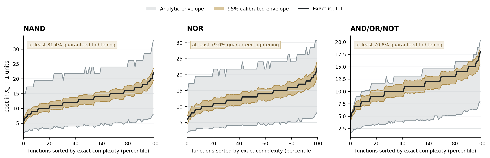

Prove the envelope
Khrapchenko boundary complexity sets a lower obstruction; explicit constructions set an upper bound.
A rigorous framework for tightening analytic complexity bounds with learned semantic structure, without confusing prediction with proof. Validated across the complete universe of four-input Boolean functions.
Classical analysis supplies a valid outer range. Semantic features locate the exact answer inside it. Held-out exact cases quantify error. Intersection produces a tighter range that inherits both the strength and the limits of its calibration.
Khrapchenko boundary complexity sets a lower obstruction; explicit constructions set an upper bound.
A compact semantic profile predicts normalized position between the two analytic endpoints.
Held-out profile classes determine conservative one-sided error allowances.
The prediction interval tightens the useful range without weakening any proved bound.
Normalize each one-sided prediction error by the width of its analytic envelope. Coverage remains calibrated, while every noncollapsed test interval receives a deterministic minimum fractional tightening known before its target is revealed.
At nominal 95% profile-class coverage, the learned envelopes retain roughly 96% function coverage and remove most of the uncertainty left by classical bounds. The guarantee below is pointwise, not an average.
Gray marks the full analytic range; gold shows the gap-normalized 95% envelope; black is exact complexity. Curves summarize equally populated complexity percentiles.

The paper develops the general refinement principle, proves the fractional-tightening theorem, gives the complete four-input Boolean experiment, and reports a frozen five-input stress test. Statistical coverage, exhaustive finite-domain certification, and higher-dimensional transfer are stated separately.
Open paper · PDF“Prediction refines the useful range; calibration determines the strength of the claim.”Semantic Boolean Complexity
Exact targets, folds, predictions, calibration tables, protocol hashes, figures, and scripts ship with the repository. The analysis runs locally with no model API or cloud dependency.